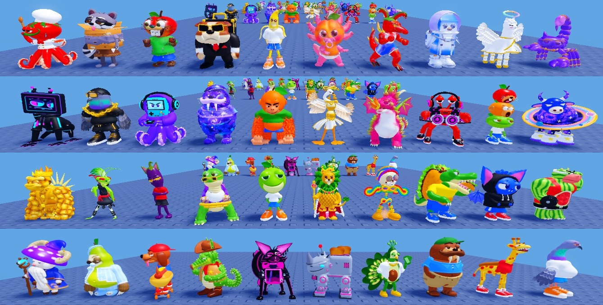
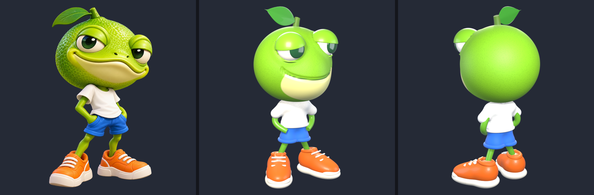
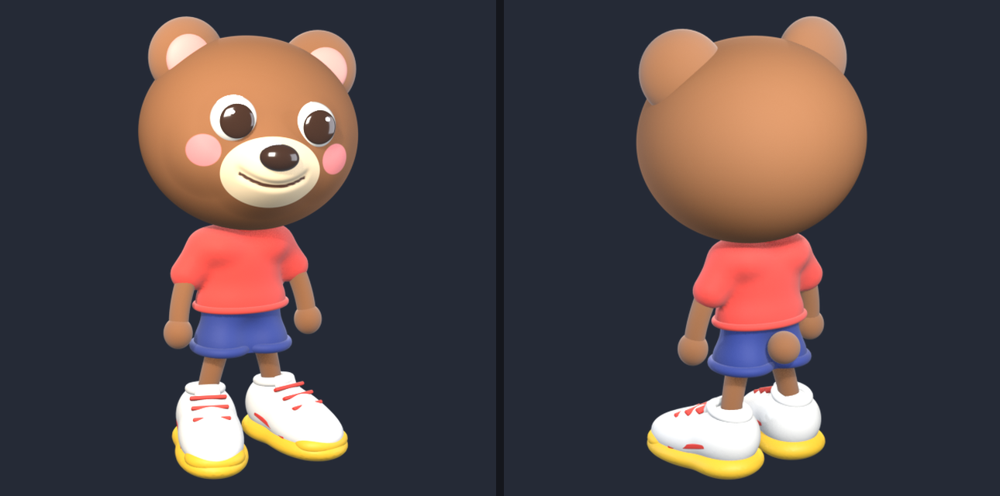
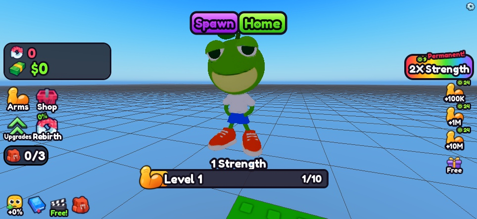
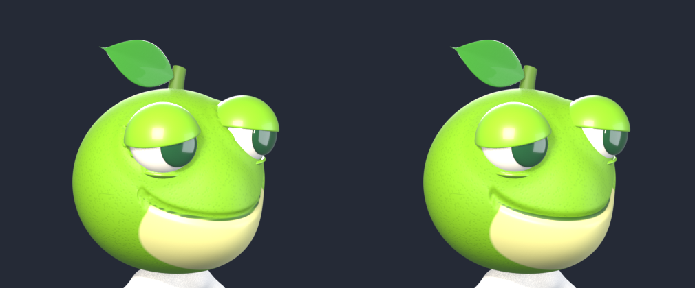

Picture → Roblox Model, with Claude
Send Claude a picture of a character and get back a polished, textured Roblox model.
Method by fwjelaa (FWJ STUDIOS). It's free to use in your own games. If you use it, show it or share it, please credit fwjelaa and link the video you got it from.

Every one of these 40 characters in my Roblox game + 1 Lift a Rock for CUH was made with this pack. Each one started as a single picture.
Contents
- How it works
- What you need
- Quick start
- Pictures that work best
- Getting it into Roblox
- Automatic upload (optional)
- Using the models in your game
- Under the hood
- Gotchas
- Numbers cheat sheet
- Credits
How it works
You don't model anything. Claude writes a short Python script that builds the model in Blender, from a toolkit made for cute, polished, toy-like characters: sculpted heads, cartoon eyes, crisp face markings, clothes, sneakers, limbs and props.
Then Claude does what an artist would do, on its own:
- Build the model in Blender (in the background: you never have to open Blender).
- Compare: put your picture, the front view and the back view side by side.
- Fix whatever doesn't match, and build again. It repeats this until the model matches your picture.
- Bake it for Roblox: one light mesh (about 16,000 triangles) with colour, normal and roughness textures, so all the detail survives.
your picture ─▶ Claude writes the build script ─▶ build ▸ compare ▸ fix (loop) ─▶ Roblox-ready model ─▶ your game
What you need
| What | Notes |
|---|---|
| Blender 4.2 or newer | Free from blender.org. Tested on 5.1. Just install it; the pack finds it by itself. |
| Python 3 | python.org. On Windows, tick "Add Python to PATH" when installing. |
| Claude Code | The Code tab in the Claude desktop app, or the claude command line tool. It needs a paid Claude plan (Pro or Max) or an API key. |
| Roblox Studio | To put the models in your game. |
Quick start
- Unzip this pack somewhere, for example
Documents\RobloxModels. - Open the folder in Claude Code. In the desktop app: open the Code tab and pick the folder. On the command line:
cdinto the folder and runclaude. - Send your picture. Drag it into the chat (or put it in the
reffolder) and say:
make this into a roblox model
or type /make-model.
- Wait. The first time, Claude checks your setup (Blender and Python). Then it builds, compares and fixes the model by itself, round after round, and bakes the Roblox version. You can watch the compare images as it goes.
- Get your model. Claude shows you the final front and back views and gives you: -
out/<Name>.fbx: the model, ready for Roblox -out/<Name>_Color.png,_Normal.png,_Rough.png: its textures
Want changes? Just say so: "make the eyes bigger", "the shirt should be green", "give it a cape". Claude edits the model and bakes it again.
Have several characters? Send them all: Claude can build them one after another, or several at once with subagents.

Pictures that work best
- The whole body, in a front three-quarter view (slightly turned, like most character art).
- One clear pose, with props held close to the body.
- Plain or transparent background, at least about 1000 px.
- Side views are fine too: Claude turns the preview camera to match your picture, while the model still faces forward in Roblox.
- Cartoon or toy style works best: the toolkit is made for cute, chunky, toy-like characters.
- Floating sparkles, glows and auras can't be part of one solid model. Claude turns them into solid shapes touching the body, or leaves them out so your game can add particles.
Getting it into Roblox
The quick way, no setup:
- In Roblox Studio: File → Import 3D (or the Import 3D button) and pick
out/<Name>.fbx. - Check the MeshPart has its textures. If it comes in grey, add a SurfaceAppearance to it and set its ColorMap, NormalMap and RoughnessMap to the three PNGs (upload them as images first).
- The model should face −Z (Roblox's front). If it doesn't, rotate it.

Automatic upload (optional)
If you make lots of models, let the pack upload them and install them in your game for you.
Set up once:
- Create an API key. On create.roblox.com, open Open Cloud → API Keys → Create API Key. Add the Assets API with Read and Write. If your game belongs to a group, create the key so it can upload for that group.
- Put the key in
.secrets/roblox-api-key.txt: just the key, nothing else. - Fill in
config.json:
{
"group_id": "1234567",
"user_id": "",
"name_prefix": "MyGame "
}group_idif your game belongs to a group; otherwise leave it empty and fill in youruser_id.- The model must have the same owner as the game. Roblox only lets a game load private models owned by its own owner, so a group game needs group-owned models.
name_prefixgoes in front of every asset's name on Roblox.
⚠️ Never share your API key. Don't show it on stream, put it in a zip or commit it. If it leaks, delete it on create.roblox.com and make a new one.
Then ask Claude to "upload it". It runs python kit/upload_all.py <Name>, which uploads the model and writes out/install.luau. Next:
- In Studio, create a ModuleScript in ServerStorage called
ModelInstallerand paste inroblox/ModelInstaller.luau(one time). At the top, setTARGET_FOLDERto where your game keeps its models. - In Edit mode, paste
out/install.luauinto the command bar and press Enter.
Each model becomes a Model with an invisible Root part (its bottom is at the feet, and so is the model's pivot) and the textured Body, facing −Z. Anything that was there before is backed up to ServerStorage.ModelBackup.
Using the models in your game
Put roblox/ModelHelpers.luau in ReplicatedStorage as a ModuleScript and use it wherever you show a model:
local ModelHelpers = require(game.ReplicatedStorage.ModelHelpers)
local model = ModelHelpers.copy(game.ReplicatedStorage.Models.BearBuddy) -- pivot at the feet
ModelHelpers.standOn(model, workspace.Pedestal) -- on top, facing the player
model.Parent = workspace
viewport.CurrentCamera = ModelHelpers.portraitCamera(model) -- hotbar icon that shows the face
ModelHelpers.tint(model, Color3.fromRGB(255, 214, 92)) -- a Golden variant- Face the player: give each pedestal, pad or slot a
Facingattribute (a Vector3 pointing at where players stand).standOnturns the model to look that way. - Variants (Golden, Diamond, Galaxy...):
tintthe SurfaceAppearance. Don't recolour the MeshPart: with a texture on, it doesn't change, and removing the texture loses the face. I use255, 214, 92for Golden,140, 236, 255for Diamond and196, 120, 255for Galaxy, plus Sparkles.
Under the hood
You don't need this section to use the pack. It's here if you're curious, or want to build models without AI.
What's in the pack
| Path | What it is |
|---|---|
CLAUDE.md | The instructions Claude follows: the step-by-step flow, the toolkit, the quality bar and the gotchas. Claude Code reads it automatically. |
.claude/skills/make-model/ | The /make-model command. |
.claude/settings.json | Lets Claude run the pack's own tools without asking every time (and nothing else). |
kit/cuhkit.py | The toolkit: every building block. |
kit/run.py | One command for everything (it finds Blender): check, ref, build, measure, export, baked. |
kit/preview.py, compare.py, measure.py, render_baked.py, review_sheet.py | Build and render, compare images, measure proportions, render the baked mesh, stack many compare images. |
kit/upload_asset.py, upload_all.py | Upload to Roblox and write the install script. |
build/BearBuddy.py | The example model. Claude reads it to learn the style. |
ref/, out/ | Your pictures; everything the tools make. |
roblox/ | ModelInstaller.luau and ModelHelpers.luau for Studio. |
build.bat / build.sh | Shortcuts: .\build BearBuddy or .\build BearBuddy export. |
The commands
python kit/run.py check :: is Blender + Python ready?
python kit/run.py build BearBuddy :: build + render + out/compare_BearBuddy.png
python kit/run.py export BearBuddy :: also bake the Roblox mesh -> out/BearBuddy.fbx + textures
python kit/run.py baked BearBuddy :: render exactly what Roblox gets -> out/baked_BearBuddy.png
python kit/run.py ref pic.jpg MyModel :: copy a picture into ref/MyModel.png
python kit/run.py measure MyModel :: picture vs render proportions, band by bandA build script
Open build/BearBuddy.py. Every model follows the same pattern:
- Units are studs. The model stands on z = 0, faces −Y and is about 4 studs tall.
- Heads are sculpted with code:
quadspheremakes an even sphere andpushbulges or dents it like a sculpting brush.
head = k.quadsphere(f"{CUH}_Head", coll, HEAD_C, (0.98, 0.9, 0.86), cuts=64)
k.push(head, (0, -0.72, -0.25), 0.5, 0.2, direction=(0, -1, 0)) # muzzle
for s in (-1, 1):
k.push(head, (s * 0.5, -0.6, -0.15), 0.4, 0.06) # cheeks
k.groove(head, mouth_z, (-0.3, 0.3), width=0.06, depth=0.03) # smile line- Face markings are crisp colour regions. You write a function that is positive inside the region. The kit stores it on the mesh, and the material draws a perfectly sharp edge at any resolution:
def muzzle(c): # c = a point on the head, in the head's own space
return min(1 - math.sqrt((c.x / 0.42) ** 2 + ((c.z + 0.26) / 0.3) ** 2), (-0.4 - c.y) * 2)
k.sdf_attr(head, "muzzle", muzzle)
k.set_mats(head, k.region_mat(f"{CUH}_Head", "#93603a", [("muzzle", "#f3dcb4", 0.5)]))- Everything else comes from kit pieces:
eye(cartoon eyes with optional lids),tshirt,shorts,sneaker,tube(arms, legs, tails),blob(clay-like fused shapes for bodies, hair, clothes) andturn(head turns). The full list is inCLAUDE.md.
The quality bar
Each round, the model is checked against the picture in this order:
- Silhouette and proportions: head-to-body ratio, limb thickness, prop sizes.
- Signature features: the face, the outfit, props and markings. You should recognise it at a glance.
- Colours: saturated and right.
- The back: no holes, no floating parts, nothing poking through.
- No artifacts: rippled lines, jagged edges, flickering surfaces.

Gotchas
In Roblox
- A Model with a PrimaryPart ignores
Model.WorldPivot. Set the pivot throughPrimaryPart.PivotOffsetinstead (the installer andModelHelpers.copydo), or every model sinks half its height into the floor. - Disc pads are cylinders lying on their side. Their own Y axis points sideways, so
standOnmeasures the top along world up. Otherwise your model stands sideways. - Hotbar and index pictures show the model's back if the viewport camera sits behind it. Use
portraitCamera. - Models copy their pedestal's rotation and end up facing walls. Use
Facingattributes. - Freshly uploaded images may not load for a few minutes while Roblox moderates them.
- Keep it moderation-safe: cartoon props only, no real weapons, nothing offensive.
In Blender (Claude already knows these from CLAUDE.md)
- Metal bakes black, so the pack bakes metals as their base colour; shine comes from gloss instead.
- Dark sunglasses can't be see-through after the bake. Place them so the eyes still show.
- Shiny fur looks like plastic. Fur and skin stay matte, and gloss goes on eyes, noses, shoes and props.
Numbers cheat sheet
| Setting | Value |
|---|---|
| Character height | 3.8 to 4.4 studs |
| Footprint | about 3.2 × 3.2 studs (up to 3.6 for wings, tails and vehicles) |
| Roblox mesh | about 16,000 triangles (hard limit 20,000) |
| Textures | colour, normal and roughness, 1024 × 1024 |
| One build + render | about 15 seconds |
| Bake for Roblox | about 20 seconds to a minute |
| Rounds per model | usually 5 to 10 |
Credits
Method by fwjelaa (FWJ STUDIOS), made for the Roblox game + 1 Lift a Rock for CUH.
You're free to use this pack in your own games. If you use it, show it, teach it or share it, please credit fwjelaa and link back to the video you got it from.
Made with Blender, Python, Roblox Studio, Roblox Open Cloud and Claude Code.